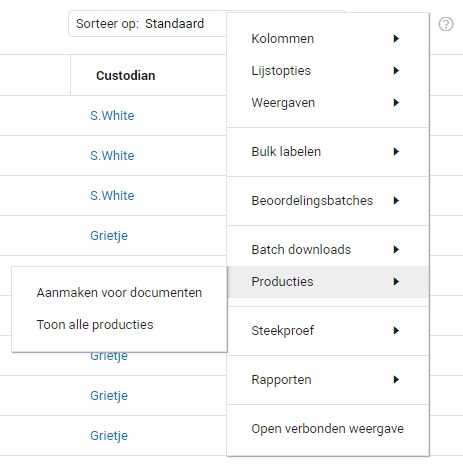

Zodra het review proces en de steekproeven afgerond zijn kunt u beginnen met de productie van de documenten. Dit is de laatste stap in het proces. De geproduceerde documenten kunt u vervolgens overdragen aan de desbetreffende partij.
De documenten kunnen geproduceerd worden in een PDF, TIFF, Native bestand of tekstbestand. U kunt de documenten produceren vanuit de documentlijst.
Door middel van het labelen van de documenten weet u zeker dat u enkel de documenten produceert die u gefilterd heeft.
Voor meer uitleg kunt u naar Productions gaan.